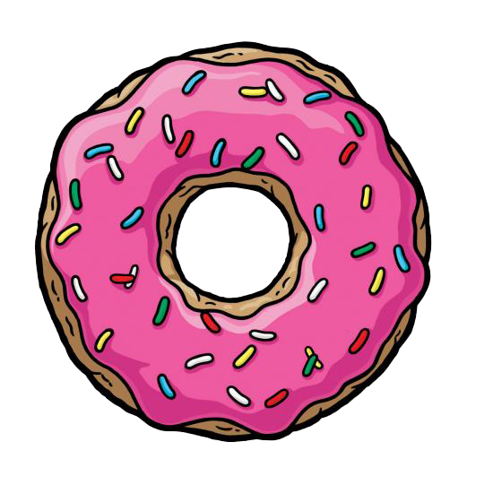
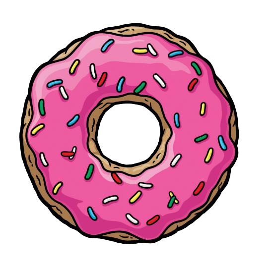
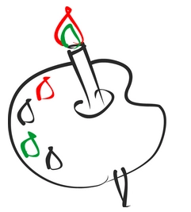
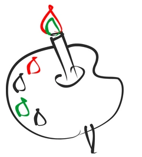

1) Представлены два изображения JPG слева и WebP справа. Оба изображения занимают 59kb. Выигрывает JPG, так как изображение получилось более детализированым, особенно это видно на белом фоне.


2) Представлены два изображения JPG слева и WebP справа. Оба изображения занимают 62kb и 61kb соответственно. Видимых отличий не видно. Выигрывает WebP, так как изображение занимает на 1kb меньше

3) Представлены два изображения PNG слева и WebP справа. Оба изображения занимают 9kb. WebP немного изменил цвет и размылил изображение возле глаз, вокруг головы и рук. Выигрывает PNG.

4) Представлены два изображения JPG слева и WebP справа. Оба изображения занимают 16kb и 12kb соответственно. Размеры разные, но WebP показывает более плавный переход при низком качестве. Победа достается WebP.

5) Представлены два изображения PNG слева и WebP справа. Оба изображения занимают 238kb и 73kb соответственно. Размеры достаточно разнятся, но при этом видимых отличий не обнаружено. Выигрывает WebP.
 6) Представлены два изображения GIF слева и WebP справа. Оба изображения занимают 13kb и 11kb соответственно. WebP исказил красный цвет. Победа достается GIF.
 
